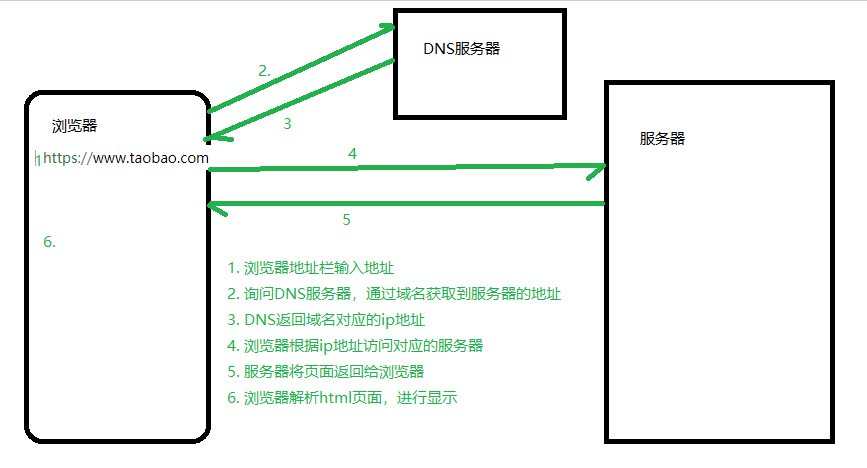

基本概念
浏览器与服务器的交互流程
- 浏览器通过地址栏发出请求
- 通过DNS服务器解析，得到域名对应的ip地址
- 根据ip地址，访问服务器具体的某个文件
- 服务器响应这个具体的文件
- 浏览器获取响应，进行显示

问题1：我们写的html页面，存放在哪儿？
问题2：我们写的html页面，在哪里执行（显示）？
前端开发：以浏览器为宿主环境，结合 HTML、CSS、Javascript等技术，而进行的一系列开发，通常称之为前端开发。
服务器端开发：HTTP服务器可以结合某一编程语言处理业务逻辑，由此进行的开发，通常称之为服务端开发。
nodejs：服务端的javascript开发，用于开发服务端程序的
为什么要学习nodejs
为什么要学习服务端的开发？
- 通过学习Node.js开发理解服务器开发、Web请求和响应过程、 了解服务器端如何与客户端配合
- 作为前端开发工程师（FE）需要具备一定的服务端开发能力
- 了解什么是服务端渲染？
- 了解服务端如何编写接口？
- 全栈工程师的必经之路
服务器端开发语言有很多，为什么要选择nodejs
- 降低编程语言切换的成本(nodejs实质上用的还是javascript)
- NodeJS是前端项目的基础设施，前端项目中用到的大量工具，都是基于nodejs实现的
- nodejs在处理高并发上有得天独厚的优势
- 对于前端工程师，面试时对于nodejs有一定的要求
参考资料：
node.js 是什么？
node.js，也叫作node，或者nodejs，指的都是一个东西。
Node.js是一个Javascript运行环境(runtime environment)，发布于2009年5月，由Ryan Dahl开发，实质是对Chrome V8引擎进行了封装。Node.js对一些特殊用例进行优化，提供替代的API，使得V8在非浏览器环境下运行得更好。
- Node.js 是一个基于 Chrome V8 引擎的 JavaScript 运行环境。
1. nodejs不是一门新的编程语言，nodejs是在服务端运行javascript的运行环境
2. 运行环境：写得程序想要运行必须要有对应的运行环境
php代码必须要有apache服务器
在web端，浏览器就是javascript的运行环境
在node端，nodejs就是javascript的运行环境
2. javascript并不只是能运行在浏览器端，浏览器端能够运行js是因为浏览器有js解析器，因此只需要有js解析器，任何软件都可以运行js。
3. nodejs可以在服务端运行js，因为nodejs是基于chrome v8的js引擎。
- Node.js 使用了一个事件驱动、非阻塞式 I/O 的模型，使其轻量又高效。
- Node.js 的包管理器 npm，是全球最大的开源库生态系统。
nodejs的本质：不是一门新的编程语言，nodejs是javascript运行在服务端的运行环境，编程语言还是javascript
nodejs与浏览器端js的区别
nodejs是基于chrome v8引擎的，因此nodejs可以和浏览器一样执行js代码，但是二者执行的js还是有一定区别的。

思考：
- 在浏览器端，可以使用javascript操作文件么？
- 在nodejs端，可以使用BOM和DOM的方法么？
- 我们学习nodejs，学习什么内容？
nodejs可以干什么？
- 开发服务端程
- 开发命令行工具（CLI），比如npm,webpack,gulp等
- 开发桌面应用程序（借助 node-webkit、electron 等框架实现）
安装nodejs
nodejs版本
下载地址
官网术语解释
- LTS 版本：Long-term Support 版本，长期支持版，即稳定版。
- Current 版本：Latest Features 版本，最新版本，新特性会在该版本中最先加入。
查看node版本
node -v
环境变量
当要求系统运行一个程序 而没有告诉它程序所在的完整路径时，
- 首先在当前目录中查找和该字符串匹配的可执行文件
- 进入用户 path 环境变量查找
- 进入系统 path 环境变量查找
配置环境变量：
找到环境变量：计算机 --右键--> 属性 --> 高级系统设置 --> 高级 --> 环境变量
直接将可执行程序所在目录配置到PATH中
//如果是window7操作系统，注意要用分号;隔开，不要覆盖原来的内容
D:\Program Files\feiq
运行nodejs程序
方式一：REPL介绍
- REPL 全称: Read-Eval-Print-Loop（交互式解释器）
- R 读取 - 读取用户输入，解析输入了Javascript 数据结构并存储在内存中。
- E 执行 - 执行输入的数据结构
- P 打印 - 输出结果
- L 循环 - 循环操作以上步骤直到用户两次按下 ctrl-c 按钮退出。
- 在REPL中编写程序 （类似于浏览器开发人员工具中的控制台功能）
- 直接在控制台输入
node命令进入 REPL 环境
- 直接在控制台输入
- 按两次 Control + C 退出REPL界面 或者 输入
.exit退出 REPL 界面- 按住 control 键不要放开, 然后按两下 c 键
方式二：使用node执行js文件
创建js文件
helloworld.js写nodejs的内容：
console.log('hello nodejs')- 打开命令窗口
cmd- shift加右键打开命令窗口，执行
node 文件名.js即可 - 给vscode安装
terminal插件，直接在vscode中执行
- shift加右键打开命令窗口，执行
- 执行命令：
node helloworld.js
注意：在nodejs中是无法使用DOM和BOM的内容的，因此document, window等内容是无法使用的。
global模块-全局变量
JavaScript 中有一个特殊的对象，称为全局对象（Global Object），它及其所有属性都可以在程序的任何地方访问，即全局变量。
在浏览器 JavaScript 中，通常 window 是全局对象， 而 Node.js 中的全局对象是 global，所有全局变量（除了 global 本身以外）都是 global 对象的属性。
在 Node.js 我们可以直接访问到 global 的属性，而不需要在应用中包含它。
常用的global属性
console: 用于打印日志
setTimeout/clearTimeout: 设置清除延时器
setInterval/clearInterval: 设置清除定时器
__dirname: 当前文件的路径，不包括文件名
__filename： 获取当前文件的路径，包括文件名
//与模块化相关的，模块化的时候会用到
require
exports
module
fs模块
fs模块是nodejs中最常用的一个模块，因此掌握fs模块非常的有必要，fs模块的方法非常多,用到了哪个查哪个即可。
在nodejs中，提供了fs模块，这是node的核心模块
注意：
- 除了global模块中的内容可以直接使用，其他模块都是需要加载的。
- fs模块不是全局的，不能直接使用。因此需要导入才能使用。
var fs = require("fs");
读取文件
语法：fs.readFile(path[, options], callback)
方式一：不传编码参数
//参数1： 文件的名字
//参数2： 读取文件的回调函数
//参数1：错误对象，如果读取失败，err会包含错误信息，如果读取成功，err是null
//参数2：读取成功后的数据（是一个Buffer对象）
fs.readFile("data.txt", function(err, data){
console.log(err);
console.log(data);
});
方式二：传编码参数
//参数1： 文件的路径
//参数2： 编码，如果设置了，返回一个字符串，如果没有设置，会返回一个buffer对象
//参数3： 回调函数
fs.readFile("data.txt", "utf8",function(err, data){
console.log(err);
console.log(data);
});
关于Buffer对象
1. Buffer对象是Nodejs用于处理二进制数据的。
2. 其实任意的数据在计算机底层都是二进制数据，因为计算机只认识二进制。
3. 所以读取任意的文件，返回的结果都是二进制数据，即Buffer对象
4. Buffer对象可以调用toString()方法转换成字符串。
写文件
语法：fs.writeFile(file, data[, options], callback)
//参数1：写入的文件名(如果文件不存在，会自动创建)
//参数2：写入的文件内容（注意：写入的内容会覆盖以前的内容）
//参数3：写文件后的回调函数
fs.writeFile("2.txt", "hello world, 我是一个中国人", function(err){
if(err) {
return console.log("写入文件失败", err);
}
console.log("写入文件成功");
});
注意：
- 写文件的时候，会把原来的内容给覆盖掉
追加文件
语法：fs.appendFile(path, data[, options], callback)
//参数1：追加的文件名(如果文件不存在，会自动创建)
//参数2：追加的文件内容（注意：写入的内容会覆盖以前的内容）
//参数3：追加文件后的回调函数
fs.appendFile("2.txt", "我是追加的内容", function(err){
if(err) {
return console.log("追加文件内容失败");
}
console.log("追加文件内容成功");
})
思考：如果没有appendFile，通过readFile与writeFile应该怎么实现？
文件同步与异步的说明
fs中所有的文件操作，都提供了异步和同步两种方式
异步方式：不会阻塞代码的执行
//异步方式
var fs = require("fs");
console.log(111);
fs.readFile("2.txt", "utf8", function(err, data){
if(err) {
return console.log("读取文件失败", err);
}
console.log(data);
});
console.log("222");
同步方式：会阻塞代码的执行
//同步方式
console.log(111);
var result = fs.readFileSync("2.txt", "utf-8");
console.log(result);
console.log(222);
总结：同步操作使用虽然简单，但是会影响性能，因此尽量使用异步方法，尤其是在工作过程中。
其他api（了解）
方法有很多，但是用起来都非常的简单，学会查文档
文档：http://nodejs.cn/api/fs.html
| 方法名 | 描述 |
|---|---|
fs.readFile(path, callback) |
读取文件内容（异步） |
fs.readFileSync(path) |
读取文件内容（同步） |
fs.writeFile(path, data, callback) |
写入文件内容（异步） |
fs.writeFileSync(path, data) |
写入文件内容（同步） |
fs.appendFile(path, data, callback) |
追加文件内容（异步） |
fs.appendFileSync(path, data) |
追加文件内容（同步） |
fs.rename(oldPath, newPath, callback) |
重命名文件（异步） |
fs.renameSync(oldPath, newPath) |
重命名文件（同步） |
fs.unlink(path, callback) |
删除文件（异步） |
fs.unlinkSync(path) |
删除文件（同步） |
fs.mkdir(path, mode, callback) |
创建文件夹（异步） |
fs.mkdirSync(path, mode) |
创建文件夹（同步） |
fs.rmdir(path, callback) |
删除文件夹（异步） |
fs.rmdirSync(path) |
删除文件夹（同步） |
fs.readdir(path, option, callback) |
读取文件夹内容（异步） |
fs.readdirSync(path, option) |
读取文件夹内容（同步） |
fs.stat(path, callback) |
查看文件状态（异步） |
fs.statSync(path) |
查看文件状态（同步） |
path模块
路径操作的问题
在读写文件的时候，文件路径可以写相对路径或者绝对路径
//data.txt是相对路径，读取当前目录下的data.txt, 相对路径相对的是指向node命令的路径
//如果node命令不是在当前目录下执行就会报错， 在当前执行node命令的目录下查找data.txt，找不到
fs.readFile("data.txt", "utf8", function(err, data) {
if(err) {
console.log("读取文件失败", err);
}
console.log(data);
});
相对路径：相对于执行node命令的路径
绝对路径：__dirname: 当前文件的目录，__filename: 当前文件的目录，包含文件名
path模块的常用方法
关于路径，在linux系统中，路径分隔符使用的是
/，但是在windows系统中，路径使用的\
在我们拼写路径的时候会带来很多的麻烦，经常会出现windows下写的代码，在linux操作系统下执行不了，path模块就是为了解决这个问题而存在的。
常用方法：
path.join();//拼接路径
//windows系统下
> path.join("abc","def","gg", "index.html")
"abc\def\gg\a.html"
//linux系统下
> path.join("abc","def","gg", "index.html")
'abc/def/gg/index.html'
path.basename(path[, ext]) 返回文件的最后一部分
path.dirname(path) 返回路径的目录名
path.extname(path) 获取路径的扩展名
var path = require("path");
var temp = "abc\\def\\gg\\a.html";
console.log(path.basename(temp));//a.html
console.log(path.dirname(temp));//abc\def\gg
console.log(path.extname(temp));//.html
【优化读写文件的代码】
path模块其他api（了解）
| 方法名 | 描述 |
|---|---|
path.basename(path[, ext]) |
返回文件的最后一部分 |
path.dirname(path) |
返回路径的目录名 |
path.extname(path) |
获取路径的扩展名 |
path.isAbsolute(path) |
判断目录是否是绝对路径 |
path.join([...paths]) |
将所有的path片段拼接成一个规范的路径 |
path.normalize(path) |
规范化路径 |
path.parse(path) |
将一个路径解析成一个path对象 |
path.format(pathObj) |
讲一个path对象解析成一个规范的路径 |
http模块
创建服务器基本步骤
//1. 导入http模块，http模块是node的核心模块，作用是用来创建http服务器的。
var http = require("http");
//2. 创建服务器
var server = http.createServer();
//3. 服务器处理请求
server.on("request", function() {
console.log("我接收到请求了");
});
//4. 启动服务器，监听某个端口
server.listen(9999, function(){
console.log("服务器启动成功了, 请访问： http://localhost:9999");
});
详细说明
- 给服务器注册request事件，只要服务器接收到了客户端的请求，就会触发request事件
- request事件有两个参数，request表示请求对象，可以获取所有与请求相关的信息，response是响应对象，可以获取所有与响应相关的信息。
- 服务器监听的端口范围为：1-65535之间，推荐使用3000以上的端口，因为3000以下的端口一般留给系统使用
request对象详解
文档地址：http://nodejs.cn/api/http.html#http_message_headers
常见属性：
headers: 所有的请求头信息
method： 请求的方式
rawHeaders： 所有的请求头信息（数组的方式）
url： 请求的地址
注意：在发送请求的时候，可能会出现两次请求的情况，这是因为谷歌浏览器会自动增加一个favicon.ico的请求。
小结：request对象中，常用的就是method和url两个参数
response对象详解
文档地址：http://nodejs.cn/api/http.html#http_class_http_serverresponse
常见的属性和方法：
res.write(data): 给浏览器发送请求体，可以调用多次，从而提供连续的请求体
res.end(); 通知服务器，所有响应头和响应主体都已被发送，即服务器将其视为已完成。
res.end(data); 结束请求，并且响应一段内容，相当于res.write(data) + res.end()
res.statusCode: 响应的的状态码 200 404 500
res.statusMessage: 响应的状态信息， OK Not Found ,会根据statusCode自动设置。
res.setHeader(name, value); 设置响应头信息， 比如content-type
res.writeHead(statusCode, statusMessage, options); 设置响应头，同时可以设置状态码和状态信息。
注意：必须先设置响应头，才能设置响应。
根据不同请求输出不同响应数据
- request.url
req.url：获取请求路径- 例如：请求
http://127.0.0.1:3000/index获取到的是：/index - 例如：请求
http://127.0.0.1:3000/获取到的是：/ - 例如：请求
http://127.0.0.1:3000获取到的是：/
- 例如：请求
服务器响应文件
- 注意：浏览器中输入的URL地址，仅仅是一个标识，不与服务器中的目录一致。也就是说：返回什么内容是由服务端的逻辑决定
server.on('request', function(req, res) {
var url = req.url
if(url === '/') {
fs.readFile('./index.html', function(err, data) {
if(err) {
return res.end('您访问的资源不存在~')
}
res.end(data)
})
}
})
模拟Apache服务器
- 根据
req.url读取不同的页面内容，返回给浏览器
MIME类型
- MIME(Multipurpose Internet Mail Extensions)多用途Internet邮件扩展类型 是一种表示文档性质和格式的标准化方式
- 浏览器通常使用MIME类型（而不是文件扩展名）来确定如何处理文档；因此服务器将正确的MIME类型附加到响应对象的头部是非常重要的
- MIME 类型
mime模块
- 作用：获取文件的MIME类型
- 安装：
npm i mime
var mime = require('mime')
// 获取路径对应的MIME类型
mime.getType('txt') // ⇨ 'text/plain'
// 根据MIME获取到文件后缀名
mime.getExtension('text/plain') // ⇨ 'txt'